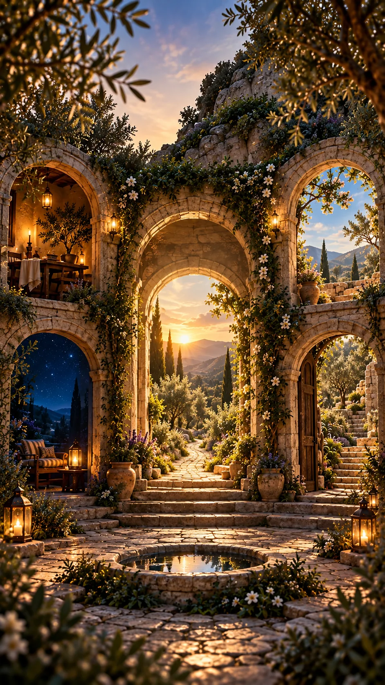

01ENCUENTROא
ENCUENTRO 1 · BERESHIT · RISHON
תֹהוּ · Tohu vaVohu
¿Qué haces cuando todo es caos?
Elige el espejo que más se parece a tu estado de hoy. No hay puntaje ni respuesta correcta.

Entra por lo que hoy resuene contigo.
Leer los nombres de Dios en su contexto. Comprender, contemplar y responder en la vida.
Conoce a quienes leemos en Dérej y vuelve al texto con una pregunta nueva.
Alimento diario para el alma
Una pregunta. Una raíz. Una práctica en el mundo.
Los cuatro caminos no son un test. Son espejos para reconocer dónde estás hoy.
Elige el espejo que más se parece a tu estado de hoy. No hay puntaje ni respuesta correcta.
ADAM–ADAMÁ permanece como Estudio completo de profundidad contextual. Esta conexión diaria sólo abre una ventana hacia él.
Profundizar es una invitación, no un requisito.
No es una tarea para acumular. La práctica existe para que algo del Estudio toque vida real.
Una pausa para recibir, encender, compartir, descansar y volver a mirar la semana.
Tiempos señalados para detenerse, recordar y volver a mirar el Camino.
Meditación · Parashá · Hitbodedut. Escucha sin salir del Camino.
Memoria personal sin puntuación, niveles ni rachas.
Preparando el encuentro…
Vidas, obras y enseñanzas. Preparando la lectura…